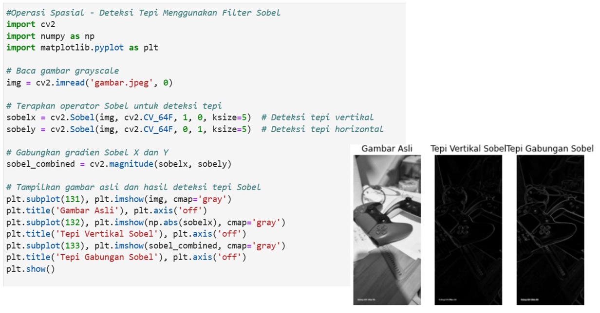

Pertemuan 5: PERBAIKAN DAN ANALISA CITRA
Materi ini membahas Perbaikan dan Analisa Citra dalam Pengolahan Citra Digital
Sub-Topik:
- Perbaikan citra atau image enhancement
- Perbaikan citra dengan operasi Titik (point operations)
- Perbaikan citra dengan operasi Spasial
- Perbaikan citra dengan operasi Transformasi
Perbaikan citra atau image enhancement
Perbaikan citra atau image enhancement adalah salah satu proses dalam pengolahan citra yang bertujuan untuk meningkatkan kualitas visual gambar. Tujuan utama dari perbaikan citra adalah untuk memperbaiki penampilan visual sebuah gambar atau untuk mengubah citra agar lebih mudah diinterpretasikan oleh sistem otomatis atau manusia.
Tujuan Perbaikan Citra
- Meningkatkan Kualitas Visual: Salah satu tujuan utama dari perbaikan citra adalah untuk meningkatkan kualitas visual dari gambar. Ini dilakukan dengan memperbaiki berbagai aspek gambar seperti kontras, ketajaman, atau kecerahan sehingga gambar lebih nyaman untuk dilihat.
- Memperjelas Informasi Spesifik: Dalam beberapa kasus, tujuan perbaikan citra adalah untuk menonjolkan fitur atau objek tertentu agar lebih jelas terlihat. Ini bisa berupa peningkatan tepi, peningkatan detail tertentu, atau kontras antara objek dan latar belakang.
- Mengurangi Noise atau Gangguan: Noise adalah gangguan pada citra yang dapat muncul akibat berbagai faktor, termasuk kondisi lingkungan, sensor kamera, atau kesalahan dalam pengambilan gambar. Mengurangi noise penting agar gambar lebih jelas dan informasi lebih mudah diinterpretasikan.
- Mengoreksi Distorsi: Distorsi pada gambar dapat terjadi karena berbagai alasan, seperti ketidaksempurnaan lensa atau sudut pengambilan gambar yang salah. Proses perbaikan citra dapat digunakan untuk mengoreksi distorsi ini agar citra terlihat lebih realistis.
- Meningkatkan Kontras dan Kecerahan: Meningkatkan kontras bertujuan untuk menonjolkan perbedaan antara area terang dan gelap dalam gambar. Dengan cara ini, elemen-elemen penting dalam gambar dapat lebih mudah terlihat.
- Penyesuaian Warna: Perbaikan citra juga dapat mencakup penyesuaian warna agar lebih akurat atau sesuai dengan kenyataan. Hal ini penting dalam aplikasi seperti fotografi, desain grafis, atau analisis citra satelit.
Perbaikan citra dengan operasi titik (point operations)
Perbaikan citra dengan operasi titik (point operations) adalah salah satu teknik dasar dalam pengolahan citra digital. Pada metode ini, setiap nilai pixel pada gambar diproses secara individual tanpa mempertimbangkan tetangganya. Operasi titik sering digunakan untuk melakukan penyesuaian kontras, kecerahan, atau pewarnaan pada gambar.
Tujuan Perbaikan Citra Dengan Operasi Titik
- Penyesuaian Kecerahan (Brightness Adjustment) yang bertujuan mengubah tingkat kecerahan gambar agar lebih sesuai dengan kondisi yang diinginkan. Kecerahan citra dapat ditingkatkan atau dikurangi dengan menambahkan atau mengurangkan nilai intensitas pixel secara konstan di seluruh gambar.
- Penyesuaian Kontras (Contrast Adjustment) yang bertujuan untuk menonjolkan perbedaan antara area terang dan gelap di dalam gambar. Kontras citra dapat diatur dengan cara meregangkan atau mempersempit nilai intensitas pixel di antara rentang nilai minimum dan maksimum.
- Inversi Citra (Negative Transformation) bertujuan untuk menghasilkan efek negatif pada citra, yaitu membalikkan warna terang menjadi gelap dan sebaliknya. Dalam operasi inversi, nilai intensitas pixel yang tinggi akan menjadi rendah, sedangkan nilai rendah akan menjadi tinggi. Hal ini sering digunakan dalam pengolahan citra medis seperti pemrosesan sinar-X.
- Transformasi Logaritmik (Log Transformation) bertujuan untuk meningkatkan detail di area yang memiliki intensitas rendah atau gelap pada gambar. Transformasi logaritmik memampatkan rentang nilai intensitas tinggi dan memperbesar rentang intensitas rendah, sehingga detail di area gelap lebih terlihat.
- Transformasi Power-Law (Gamma Correction) bertujuan untuk mengontrol distribusi intensitas pixel pada citra untuk meningkatkan visibilitas atau kontras berdasarkan tingkat gamma. Transformasi power-law digunakan untuk memperbaiki pencahayaan yang tidak merata. Teknik ini mengubah tingkat intensitas pixel berdasarkan fungsi eksponensial dengan parameter gamma.
Contoh Penerapannya Pada Python

Gambar 5.1: Kode Python & output Perhitungan Citra Menggunakan Operasi Titik
Perbaikan citra dengan operasi Spasial
EOperasi spasial dalam pengolahan citra digital merupakan teknik yang melibatkan manipulasi nilai pixel berdasarkan lingkungan atau tetangganya dalam suatu citra. Berbeda dengan operasi titik yang hanya memproses satu pixel pada satu waktu, operasi spasial mempertimbangkan sekelompok pixel, sering kali dalam bentuk filter atau kernel. Operasi spasial sangat efektif dalam meningkatkan kualitas citra dengan memodifikasi detail tekstur, tepi, atau mengurangi noise. Dengan tujuan perbaikan citra dengan operasi spasial yaitu Penajaman citra, pelembutan citra, dan deteksi tepi.
Jenis Operasi Spasial
- Filter Linear (Linear Filters): Operasi filter yang menggunakan bobot tertentu untuk setiap pixel tetangga dan menghasilkan nilai pixel baru sebagai hasil perkalian bobot dengan nilai intensitas tetangga.
- Filter Non-Linear (Non-Linear Filters): Filter yang tidak menggunakan operasi linier untuk menghitung pixel baru. Sebaliknya, mereka menggunakan operasi seperti median atau maksimum pada tetangga pixel.
- Filter High-Pass dan Low-Pass: Filter Low-Pass: Menyaring frekuensi tinggi dari citra, yaitu detail kecil dan noise, sehingga gambar menjadi lebih halus. Filter Gaussian adalah salah satu contohnya.
Contoh Penerapannya Pada Python
Gambar 5.2: Kode & Output Python operasi spasial menggunakan Sobel pada Citra
Perbaikan citra dengan operasi Transformasi
Operasi transformasi dalam pengolahan citra merupakan teknik yang mengubah citra dari satu domain ke domain lain untuk memperbaiki kualitas citra, menganalisis frekuensi, atau memudahkan manipulasi citra. Transformasi ini mengubah representasi citra sehingga informasi penting dapat lebih mudah diekstraksi atau citra dapat ditingkatkan dalam aspek tertentu. Operasi transformasi sering kali melibatkan perubahan citra dari domain spasial (berdasarkan lokasi pixel) ke domain frekuensi (berdasarkan komponen frekuensi dari citra). Beberapa metode umum yang digunakan dalam operasi transformasi adalah Transformasi Fourier, Transformasi Wavelet, dan Transformasi Cosinus Diskrit (DCT). Operasi ini bertujuan untuk mengurangi noise, meningkatkan kualitas, kompresi citra, dan restorasi citra
Contoh Penerapannya Pada Python

Gambar 5.3: Kode & Output Python operasi Transformasi menggunakan filter low-pass pada Citra